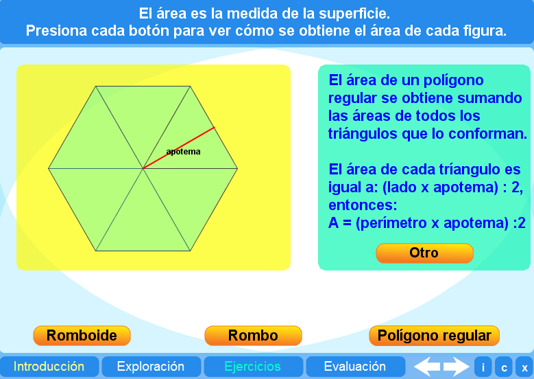
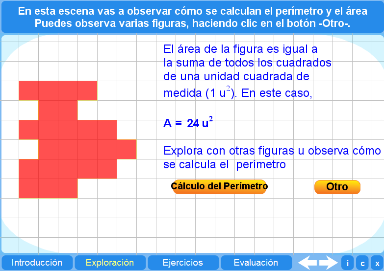
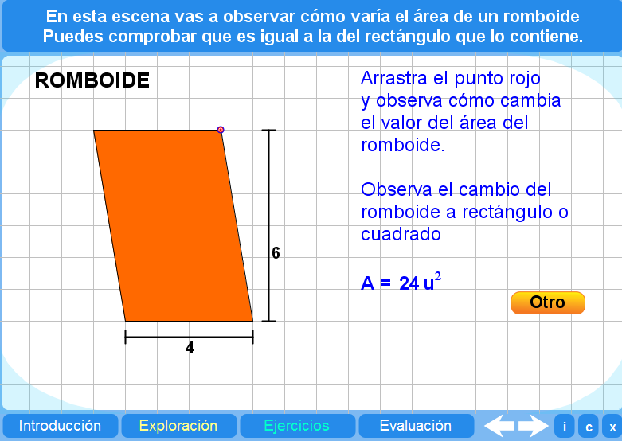
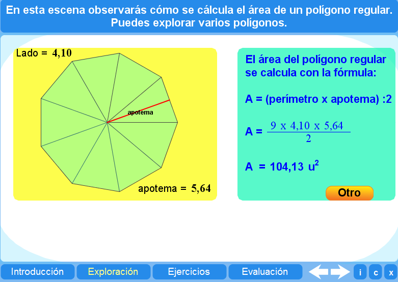
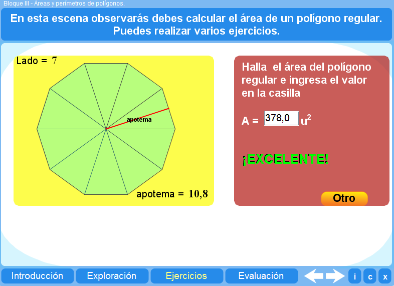
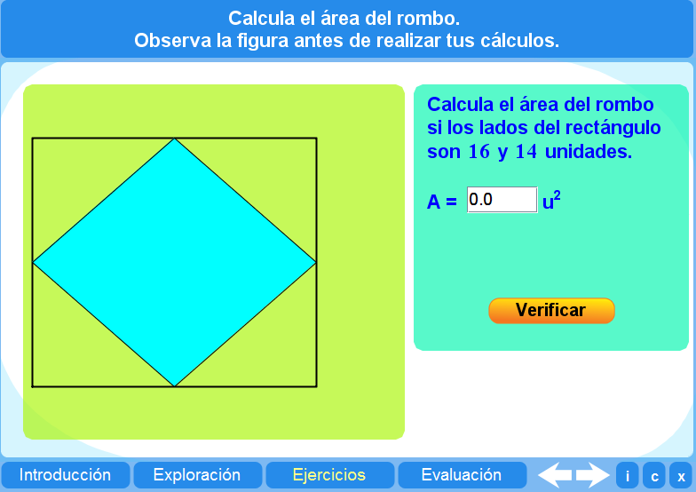
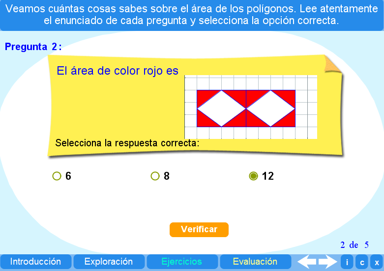

Objetivo
Obtener el perímetro y la superficie de rombos, romboides y polígonos mediante varias actividades.
Instrucciones generales
Se puede navegar entre los apartados con el menú de la parte inferior. Este menú aparece a lo largo de todo el objeto de aprendizaje y conserva su funcionalidad.

También se puede navegar por las escenas por medio de las flechas de navegación que aparecen en el lado inferior derecho de la aplicación. Dentro de los apartados Exploración y Ejercicios es necesario utilizar estas flechas para acceder a las escenas sucesivas de dichos apartados.

En la parte inferior derecha de la aplicación se encuentran los siguientes botones:
| Muestra la documentación del objeto de aprendizaje. | |
| Despliega los créditos correspondientes. | |
| Cierra el interactivo. |
Contenidos
Introducción
Se presentan las justificaciones de las fórmulas para obtener las áreas de los romboides, rombos y polígonos regulares.

Exploración 1
Se presentan diferentes figuras para que el estudiante calcule su perímetro y área mediante la observación de las cuadrículas..

Exploración 2
Se presenta un romboide que puede ser modificado con un punto de arrastre, que permite verificar cómo cambia el área.

Exploración 3
Se presentan varios polígonos regulares y la fórmula que permite calcular su área.

Ejercicio 1
Se presentan polígonos regulares a los que el alumno deberá calcular su área.

Ejercicio 2
Se presentan rombos a los que el alumno deberá calcular su área.

Evaluación
Esta evaluación consiste en obtener el área de las figuras coloreadas. Es necesario que el alumno observe las dimensiones a través de la cuadrícula.

| Los materiales aquí presentados utilizan el applet Descartes Web 2.0. | |
| Los contenidos de esta unidad didáctica están bajo una licencia de Creative Commons. | |